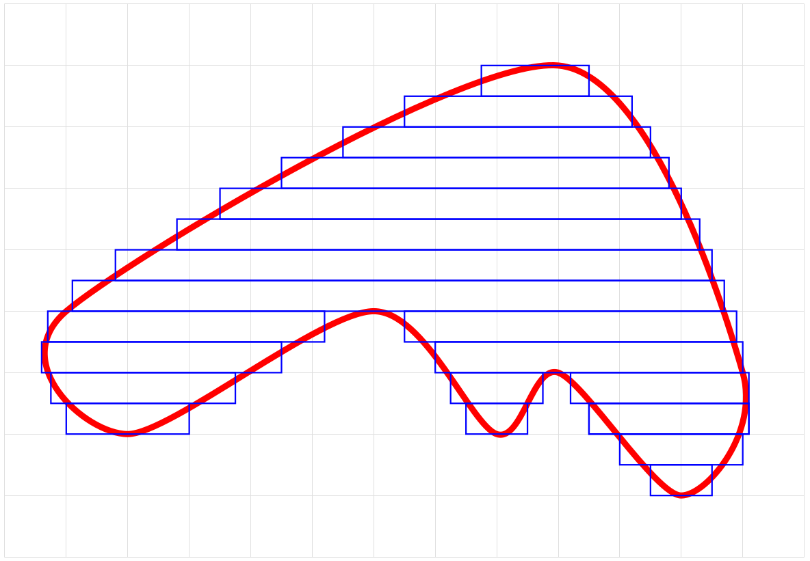
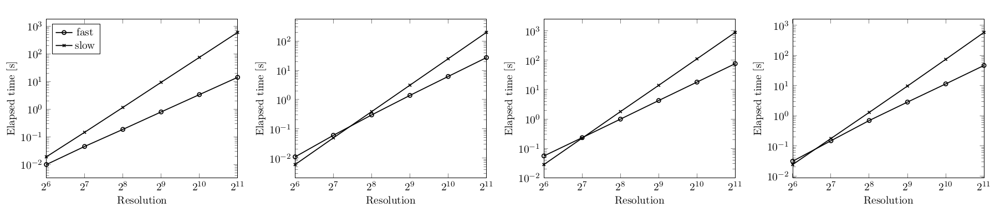
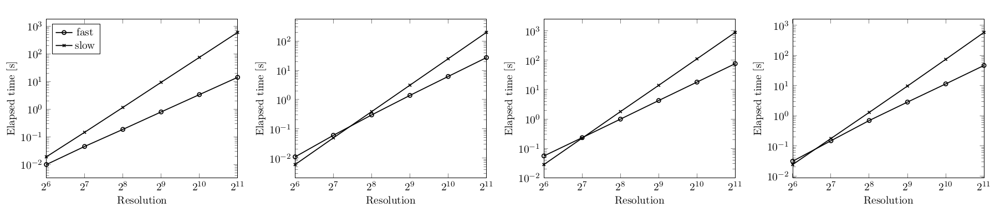

# A fast algorithm for generating triangle meshes from signed distance bounds
(written by Nenad Markuš in April 2020)
A signed distance bound for some shape $S$ is a function $f\_S:\mathbb{R}^3\rightarrow\mathbb{R}$ such that $f\_S(x, y, z)$ returns a geometric distance from the point $(x, y, z)\in\mathbb{R}^3$ to $S$.
If $(x, y, z)$ is within $S$, then the returned distance is negative.
J. C. Hart [1] uses the definition that $f\_S$ is a signed distance bound of $S$ if and only if for all $\mathbf{x}\in\mathbb{R}^3$ we have
$$
|f\_S(\mathbf{x})|\leq
\min\_{\mathbf{y}\in f\_S^{-1}(0)}||\mathbf{x} - \mathbf{y}||\_2
$$
where $f\_S^{-1}(0)=\\{\mathbf{z}: f\_S(\mathbf{z})=0\\}$.
We are interested in approximating a shape defined by its signed distance bound into a triangle mesh.
This post describes one such algorithm.
A demo implementation can be tested at [https://femtocad.gitlab.io](https://femtocad.gitlab.io) and the open-source code is available at [https://github.com/nenadmarkus/gridhopping](https://github.com/nenadmarkus/gridhopping).
In our case, the polygonization volume is an axis-aligned cube centered at the origin.
This cube is partitioned into a rectangular grid with $N^3$ cells by subividing each of its sides into $N$ intervals of equal size.
If we assume we are not dealing with [fractals](https://en.wikipedia.org/wiki/Fractal), only $O(N^2)$ cells asymptotically contain the surface of our shape.
Thus, the only triangles that need to be computed are passing through these cells.
This puts the lower bound on the complexity of the polygonization algorithm.
However, the challenge is to isolate just these $O(N^2)$ cells.
Obviously, the simplest solution, which leads to $O(N^3)$ complexity, is to check each of the $O(N^3)$ cells.
This is too slow for our purposes.
To speed up the polygonization process, we are going to use a variant of [ray marching](https://computergraphics.stackexchange.com/questions/161/what-is-ray-marching-is-sphere-tracing-the-same-thing) called Sphere tracing, described by [John C. Hart](https://scholar.google.com/citations?user=MjmBY5AAAAAJ&hl=en).
See the paper ["Sphere Tracing: A Geometric Method for the Antialiased Ray Tracing of Implicit Surfaces"](https://doi.org/10.1007/s003710050084) for more details than are presented here.
The basic idea is to define a ray and move along its direction until you find the intersection with the shape or exit the rendering volume.
In sphere tracing, the marching step is set to be equal to the (estimated) distance of the current point to the shape.
The following figure illustrates this in 2D (the surface is drawn in pink):

This approach greatly speeds up the process of finding the intersection.
In our case, we emit $N^2$ such rays which are parallel.
All of these rays have their direction vector set in the $+z$ direction: $(0, 0, 1)$.
The centers of the $N^2$ most distant cells along the $-z$ direstions are used as ray origins.
Once the marching process along the ray hits the surface of the shape, we invoke the polygonization process for the corresponding cell.
However, unlike in the ray marching-based rendering of images, we do not stop the marching process here.
The marching along the ray in continued (starting at the next cell along the $+z$ direction) until the end of the polygonization volume is reached.
Currently, the polygonization of each cell is performed by the [Marching cubes](https://en.wikipedia.org/wiki/Marching_cubes) algorithm, although other approaches could be used as well
(e.g., [Marching tetrahedra](https://en.wikipedia.org/wiki/Marching_tetrahedra)).
A more mathematical details of the algorithm are given in the following section.
## The grid hopping algorithm
Without loss of generality, we assume that our polygonization volume is a unit cube centered at the origin.
The grid resolution is specified by $N$: there are $N^3$ cubic cells in the grid, each with a volume equal to $\frac{1}{N^3}$.
Each cell is assigned a triplet of integers $(i, j, k)$ with $i, j, k\in \\{0, 1, 2, \ldots, N-1\\}$.
The centroids of the cells are computed according to the following rules:
$$
x\_i = -\frac{1}{2} + \frac{1}{2N} + \frac{i}{N}
$$
$$
y\_j = -\frac{1}{2} + \frac{1}{2N} + \frac{j}{N}
$$
$$
z\_k = -\frac{1}{2} + \frac{1}{2N} + \frac{k}{N}
$$
A total of $N^2$ rays are cast in the $+z$ direction from the plane $z=-0.5+\frac{1}{2N}$.
Such rays have the following vector parameterization for $\lambda \geq 0$:
$$
R\_{ij}\\;\\;\ldots\\;\\;\mathbf{r}=
\mathbf{o}\_{ij} + \lambda\mathbf{d}
$$
with $\mathbf{o}\_{ij}=(x\_i, y\_j, -0.5+\frac{1}{2N})^T$ is the origin of ray $R\_{ij}$ and $\mathbf{d}=(0, 0, 1)^T$ is its direction.
The $(x\_i, y\_j)$ pairs ($N^2$ of them) are computed according to above equations for cell centroids.
We move along each ray using the ray marching (sphere tracing) method (references [1, 2]).
If the polygonization volume cotains a shape $S$ described by its signed distance bound $f\_S$, the following iteration describes this process:
$$
\mathbf{r}\_{n+1}=
\mathbf{r}\_n + \left|f\_S(\mathbf{r}\_n)\right|\mathbf{d}
$$
The iteration starts at $\mathbf{r}\_0=\mathbf{o}\_{ij}$ and continues until $\left|f\_S(\mathbf{r}\_n)\right|$ is sufficiently small
(indicating we are very close to the surface of $S$, by definition of $f\_S$).
In our case, we are only interested to move close enough to the surface to determine the $(i, j, k)$ triplet determining the cell.
Simple algebra shows that a cell possibly intersects the surface of $S$ and we have to call a polygonization routine if the distance $\left|f\_S\right|$ is less than or equal to
$$
\sqrt{
\left(\frac{1}{2N}\right)^2 + \left(\frac{1}{2N}\right)^2 + \left(\frac{1}{N}\right)^2
}=
\frac{\sqrt{6}}{2N}
$$
The pseudocode of the method is below.
// inputs:
// * `eval_sdb` is the signed distance bound represeting a shape
// * `N` is the grid resolution
function apply_grid_hopping(eval_sdb, N)
{
for (var i=0; i < N; ++i)
for (var j=0; j < N; ++j)
{
var k=0;
while (true)
{
// set the origin of the ray
var x=-1.0/2.0+1.0/(2.0*N)+i/N;
var y=-1.0/2.0+1.0/(2.0*N)+j/N;
var z=-1.0/2.0+1.0/(2.0*N)+k/N;
// use ray marching to determine how much to move along the ray
var t = trace_ray(
[x, y, z], // origin of the ray
[0.0, 0.0, 1.0], // direction of the ray
eval_sdb, // signed distance bound
1.05*(1.0/2.0 - z), // max distance to travel
Math.sqrt(6.0)/(2.0*N) // distance to surface we require
);
// set the new value of z and its associated cell, (i, j, k)
z = z + t;
k = Math.floor(N*(z + 1.0/2.0 - 1.0/(2.0*N)));
// are we outside the polygonization volume?
if (k>N-1 || z>1.05/2.0)
break;
// polygonize cell (i, j, k)
... // <- polygonizaiton code goes here, e.g., Marching cubes
// move further along the z direction
++k;
}
}
}
If the ray intersects the surface and we denote the closest intersection to $\mathbf{r}\_0$ with $\mathbf{r}^\*$,
then the above iteration converges to $\mathbf{r}^\*$.
This is because
1. $\left|f\_S(\mathbf{r}\_n)\right|\geq 0$;
2. on the ray between $\mathbf{r}\_0$ and $\mathbf{r}^\*$, $f\_S(\mathbf{r})=0$ only for $\mathbf{r}=\mathbf{r}^\*$;
3. the iteration will never "overshoot" $\mathbf{r}^\*$ because $f\_S$ is a signed distance bound.
See reference [1] for additional analysis.
## Theoretical analysis of computational complexity
We analyze the asymptotic number of steps required by the method from previous section to polygonize a shape defined through its signed distance bound.
For non-fractal shapes, there are at most $O(N^2)$ cells that contain polygons.
The challenge is to isolate these cells in a fast manner.
The trivial way is to check all $N^3$ cells.
This may be too slow for some applications when high resolution (large $N$) is required.
Our claim is that the algorithm from the previous section is faster than that:
its complexity is $O(N^2\log N)$.
We provide evidence for this in the following steps:
1. provide a proof for polygonizing planes;
2. provide a proof for polygonizing axis-aligned boxes;
3. argue that any non-fractal shape can be approximated as a union of boxes.
These steps are explained in the following three subsections.
#### Polygonizing planes
A plane is a flat, two-dimensional surface that extends infinitely far.
Of course, we are interested in polygonizing only the part that intersects with the polygonization volume.
The exact signed distance from a point $\mathbf{r}$ to a plane $P$ is given by the following equation (see
):
$$
D\_P(\mathbf{r})=
\mathbf{n}\_P^T\cdot (\mathbf{r} - \mathbf{r}\_P)
$$
where $\mathbf{r}\_P$ is some point lying on $P$ and $\mathbf{n}\_P$ is $P$'s normal vector such that $\mathbf{n}\_P^T\cdot\mathbf{n}\_P=||\mathbf{n}\_P||\_2^2=1$.
We analyze three different cases: two cases of axis-aligned planes and one case for a plane in general position.
The first case is when the plane and the rays are perpendicular.
In our case, since the rays are cast in the $+z$ direction, this corresponds to the plane $z=C$ for some constant $C$.
The second case is when the plane and the rays are parallel (plane specified by $x=C$ or $y=C$).
The third case is the plane in a general position.
**Case \#1: plane $P$ and rays are perpendicular**.
First, notice that the orientation of the plane does not matter since the raymarching always uses the absolute value of the computed distance bound.
Thus, we have two subcases: approaching the plane and escaping the vicinity of its surface.
The approaching phase is performed in a single step for each ray since $D\_P$ provides the exact distance estimate.
Hence, its complexity is $O(1)$, independent of $N$, the position of the plane along the $z$ axis and the starting point.
Since there are $N^2$ rays, the complexity of the approaching phase is $O(N^2)$.
Escaping the plane's surface requires more work and the following analysis holds for each of the $N^2$ rays that need to be cast.
Let $\mathbf{r}_0$ donote the starting point in the vicinity of $P$'s surface.
Note that $D\_P(\mathbf{r}\_0)$ is about $\frac{1}{N}$ in size immediately after the polygonization routines for $P$'s cells have been invoked
(at most two in this case, only one containing polygons).
Analyzing the iteration basic iteration of the algorithm, it is easy to see that $D\_P(\mathbf{r}\_1)=2\cdot D\_P(\mathbf{r}\_0)$ and in general the following holds:
$$
D\_P(\mathbf{r}\_n)=2^n\cdot D\_P(\mathbf{r}\_0)
$$
i.e., the method escapes the surface in steps of exponentially increasing size.
If $D\_P(\mathbf{r}\_0)$ is about $\frac{1}{N}$, then the number of steps required to exit the polygonization volume is $O(\log N)$.
Given that there are $N^2$ such rays, the complexity of the escaping phase is $O(N^2\log N)$.
The approaching and escaping phase are performed sequentially.
Thus, the complexity of polygonizing a plane in this scenario is $O(N^2\log N)$.
**Case \#2: plane $P$ and rays are parallel**.
First, notice that if the distance between a ray and $P$ is equal to $\frac{k}{N}$ in this case, then the method exits the polygonization volume in approximately $\frac{N}{k}$ steps.
There are $N$ rays marching through cells that contain $P$.
The algorithm takes approximately $N$ steps along each of these rays before terminating.
Next, notice that there are $N$ rays above and $N$ rays below $P$, parallel to $P$ and of distance approximately $\frac{k}{N}$ to $P$ for some integer $k \leq N-1$.
These rays require about $N/k$ steps before exiting the polygonization volume.
Thus, a conservative estimate for the number of steps $S$ for all $N^2$ rays is
$$
S\leq
N^2 + 2\left( N^2 + \frac{N^2}{2} + \frac{N^2}{3} + \cdots + \frac{N^2}{N-1} + N \right)
=N^2\cdot\left(1 + 2H\_N\right)
$$
where $H\_N$ is $N$th partial sum of the harmonic series \cite{hseries}: $H\_N=\sum\_{n=1}^N \frac{1}{n}$.
The number $H\_N$ is about as large as $\log N$.
The reason for this comes from the comparison of $H_N$ and the integral $\int\_1^{N}\frac{1}{x}\mathop{dx}$,
which can be solved analytically.
Thus it follows that $S\in O(N^2\log N)$ and the complexity of case \#2 is $O(N^2\log N)$.
**Case \#3: the general case**.
Due to easier exposition and without loss of generality, we assume that the plane passes through origin (i.e., $\mathbf{r}\_P=\mathbf{0}$).
Combining this assumption with the basic iteration of the algorithm and the point-plane distance, we get the following iteration for the $z$ coordinate:
$$
z\_{n+1}=
z\_n + \left| n\_x x\_0 + n\_y y\_0 + n\_z z\_n \right|
$$
where $(n\_x, n\_y, n\_z)^T$ is the unit normal of the plane and $(x\_0, y\_0, z\_0)^T$ is the origin of the ray.
Let us denote with $z^\*$ the intersection of the ray and the plane:
$$
z^\*=
-\frac{n\_x x\_0 + n\_y y\_0}{n\_z}
$$
Without loss of generality, we assume that $n\_z\ < 0$.
There are two subcases:
(1) the method approaches the plane along the ray and (2) the method moves away from the plane along the ray.
In the first subcase, we have $n\_x x\_0 + n\_y y\_0 + n\_z z\_n > 0$.
In this scenario, it is easy to see that
$$
z^\* - z\_n =
(1 + n\_z)\cdot (z^\* - z\_{n-1})=
\cdots=
(1 + n\_z)^n (z^* - z\_0)
$$
Since $1 + n\_z$ is between $0$ and $1$, we have that the number of iterations $n$ has to be about $O(\log N)$ so that $D\_P(\mathbf{r}\_n)$ becomes less than $\frac{\sqrt{6}}{2N}$
(at which point the polygonization routine is invoked and we can move to the other side of the plane).
In the second subcase, we have $n\_x x\_0 + n\_y y\_0 + n\_z z\_n < 0$.
Now the following holds:
$$
z\_n - z^\* =
(1 - n\_z)\cdot (z\_{n-1} - z^\*)=
\cdots=
(1 - n\_z)^n (z\_0 - z^\*)
$$
Since $1 - n\_z$ is greater than $1$, at most $O(\log N)$ iterations along the ray are needed to exit the polygonization volume.
Given that there are $N^2$ rays in total, the complexity of case \#3 is $O(N^2\log N)$.
#### Polygonizing rectangular boxes
A rectangular box can be obtained by intersecting six axis-aligned planes.
Let $d\_1, d\_2, \ldots, d\_6$ be the distances from point $(x, y, z)$ to each of these planes.
Then the distance to the box is bounded by
$$
f(x, y, z)=
\max\\{d\_1, d\_2, d\_3, d\_4, d\_5, d\_6\\}
$$
Since polygonizing each of the box sides takes $O(N^2\log N)$ steps, this is also the total complexity of polygonizing a box.
This can also be justified by the fact that the $\max$ operation partitions the polygonization volume into several regions.
In each of these regions only the distance to one particular plane is relevant (largest $d\_i$).
All the rays passing through this region require at most $O(N^2\log N)$ steps before exiting the region.
The conclusion about the total complexity follows from the fact that the number of such regions is finite.
As noted, the above equation bounds the distance to the box.
The exact distance function can be constructed and this leads to more efficient marching in practice
(a constant speed-up, not in the asymptotic sense).
For example, see [https://www.youtube.com/watch?v=62-pRVZuS5c](https://www.youtube.com/watch?v=62-pRVZuS5c).
#### Polygonizing other shapes
A shape can be approximated by $K$ axis-aligned boxes.
See the following figure for an illustration of this process.

Of course, we can improve the quality of approximation by increasing $K$.
It is important to note that $K$ does not depend on grid resolution $N$.
The efficiency of approximation can be increased by using non-axis-aligned planes at the boundary of the shape.
This process is not unlike the use of triangle meshes in modern computer graphics.
Approximating the shape as a union of $K$ boxes keeps the $O(N^2\log N)$ polygonization complexity.
This is because the union of $K$ boxes (and, in general, shapes) can be obtained by applying the $\min$ operation to combine all the individual distance bounds.
The number of steps the method has to make in this case is asymptotically no worse than polygonizing each box on its own.
Thus, the total number of steps scales as $O(N^2\log N)$ since the grid resolution $N$ does not depend on $K$.
## Experimental analysis
We compare our method ("fast") with the basic $O(N^3)$ polygonization scheme which inspects every cell in the grid ("slow").
The polygonization of a cell is obtained with the Marching cubes algorithm.
The goal is to show that the fast method is asymptotically faster than the slow method.
To achieve this, we implement both methods in C and run them on four different scenes for varying grid resolutions.
It is important to note that both implementations produce exactly the same meshes when polygonizing signed distance bounds.
We use four different scenes in our experiments.
The first scene contains $7$ basic primitives:
sphere, cube, cone, cylinder, torus, hexagonal prism and capsule.
All these primitives have simple and efficient signed distance bounds.
The second scene is a surface of genus $2$ given by the implicit equation
$2y(y^2-3x^2)(1-z^2) + (x^2 + y^2)^2 - (9z^2 - 1)(1-z^2)=0$.
The third scene contains a knot with an explicit signed ditance bound.
The fourth scene contains the Sierpinski tetrahedron.
These scenes are visualized below.
 The Following figure shows the times needed to polygonize the scenes with the slow and the fast algorithm
The legend for all graphs is plotted in the left one.

Note that the axes in the graphs have logarithmic scale.
We can see that the measured times for both methods appear as lines.
This is expected since the computed theoretical complexities are polynomial ($\sim N^3$ and $\sim N^2$).
However, the fast method becomes significantly faster for large $N$, i.e., asymptotically.
This aligns with the predictions from our theoretical analysis.
## Resources
The following blog posts on ray marcing were helpful:
* [http://blog.hvidtfeldts.net/index.php/2011/06/distance-estimated-3d-fractals-part-i](http://blog.hvidtfeldts.net/index.php/2011/06/distance-estimated-3d-fractals-part-i)
* [https://www.iquilezles.org/www/articles/distfunctions/distfunctions.htm](https://www.iquilezles.org/www/articles/distfunctions/distfunctions.htm)
* [http://jamie-wong.com/2016/07/15/ray-marching-signed-distance-functions](http://jamie-wong.com/2016/07/15/ray-marching-signed-distance-functions)
* [http://9bitscience.blogspot.com/2013/07/raymarching-distance-fields_14.html](http://9bitscience.blogspot.com/2013/07/raymarching-distance-fields_14.html)
Here are the important academic references:
[1] J. C. Hart. Sphere tracing: A geometric method for the antialiased ray tracing of implicit surfaces. The Visual Computer, 1994.
[2] J. C. Hart, D. J. Sandin, and L. H. Kauffman. Ray tracing deterministic 3-d fractals. SIGGRAPH computer graphics, 1989.
The Following figure shows the times needed to polygonize the scenes with the slow and the fast algorithm
The legend for all graphs is plotted in the left one.

Note that the axes in the graphs have logarithmic scale.
We can see that the measured times for both methods appear as lines.
This is expected since the computed theoretical complexities are polynomial ($\sim N^3$ and $\sim N^2$).
However, the fast method becomes significantly faster for large $N$, i.e., asymptotically.
This aligns with the predictions from our theoretical analysis.
## Resources
The following blog posts on ray marcing were helpful:
* [http://blog.hvidtfeldts.net/index.php/2011/06/distance-estimated-3d-fractals-part-i](http://blog.hvidtfeldts.net/index.php/2011/06/distance-estimated-3d-fractals-part-i)
* [https://www.iquilezles.org/www/articles/distfunctions/distfunctions.htm](https://www.iquilezles.org/www/articles/distfunctions/distfunctions.htm)
* [http://jamie-wong.com/2016/07/15/ray-marching-signed-distance-functions](http://jamie-wong.com/2016/07/15/ray-marching-signed-distance-functions)
* [http://9bitscience.blogspot.com/2013/07/raymarching-distance-fields_14.html](http://9bitscience.blogspot.com/2013/07/raymarching-distance-fields_14.html)
Here are the important academic references:
[1] J. C. Hart. Sphere tracing: A geometric method for the antialiased ray tracing of implicit surfaces. The Visual Computer, 1994.
[2] J. C. Hart, D. J. Sandin, and L. H. Kauffman. Ray tracing deterministic 3-d fractals. SIGGRAPH computer graphics, 1989.